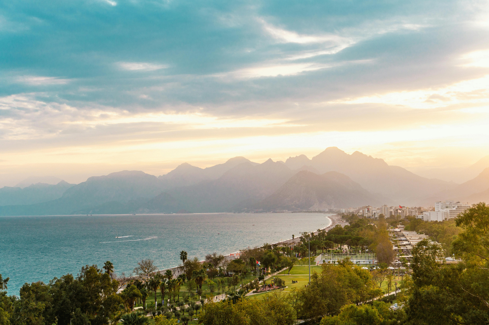
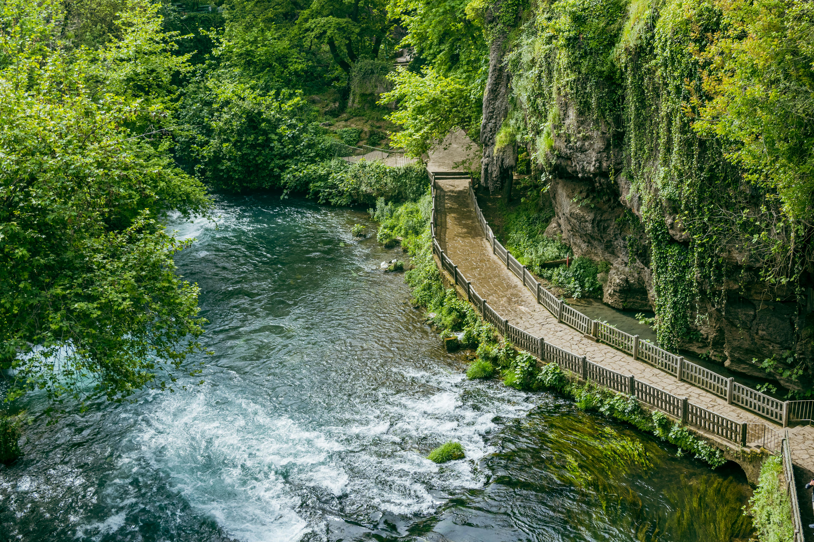
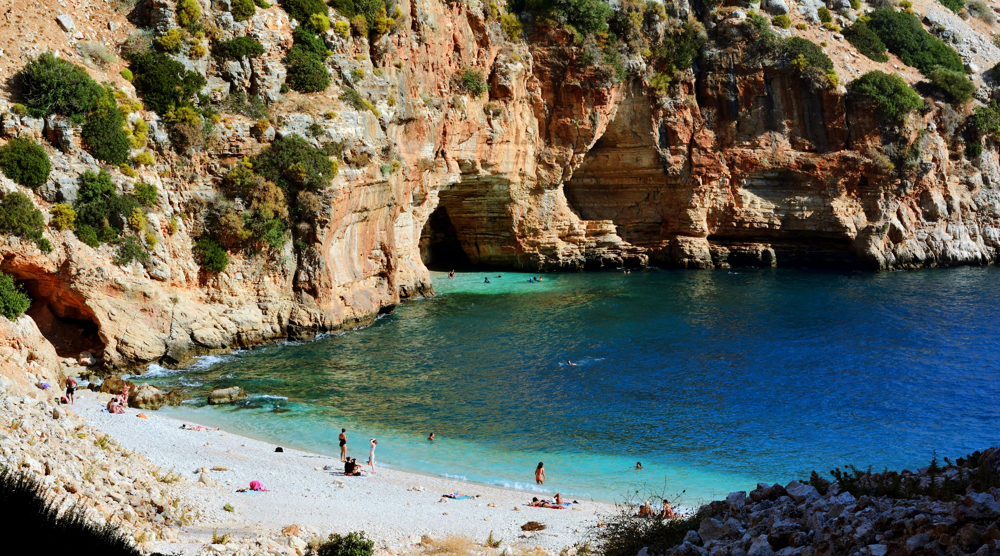

~ Antalya Hakkında ~
Antalya, Türkiye'nin güneyinde Akdeniz kıyısında yer alan bir turizm cennetidir. Tarihi kalıntılar, masmavi denizler ve büyüleyici doğasıyla her yıl milyonlarca turisti ağırlar.
- 🦋 Antalya, MÖ 2. yüzyılda Bergama Kralı II. Attalos tarafından "Attaleia" adıyla kurulmuştur.
- ☀️ Yazları sıcak ve kurak, kışları ılık ve yağışlıdır.
- 🏛️ Aspendos, Side ve Perge gibi tarihi mekanlara sahiptir.
- 🌲Düden Şelalesi, Köprülü Kanyon ve Adrasan Koyu gibi birçok doğal güzelliklere sahiptir.
- 🌊 Konyaaltı ve Lara Plajları dünyaca ünlüdür.
- ~ Antalya'nın nüfusu 2025 yılı itibariyle yaklaşık 2,7 milyon'dur. (Türkiye'nin 5. büyük şehridir.)
~ Gezilecek Yerler ~
1) Konyaaltı Plajı


2) Düden Şelalesi


3) Mağaralı Koy


4) Side Antik Kenti